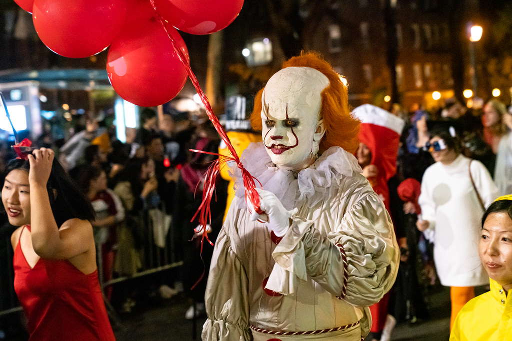
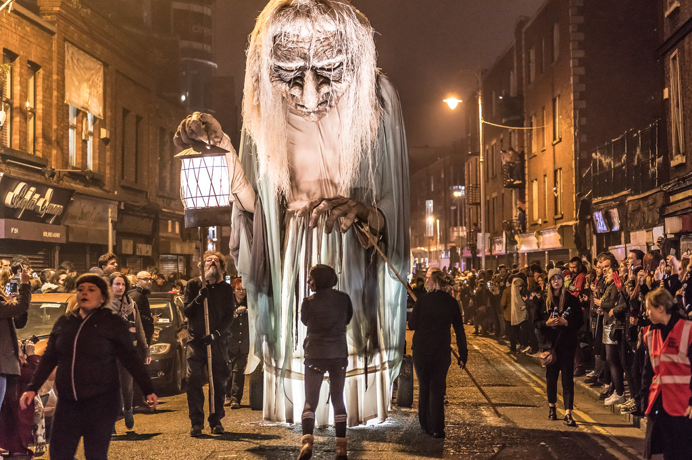
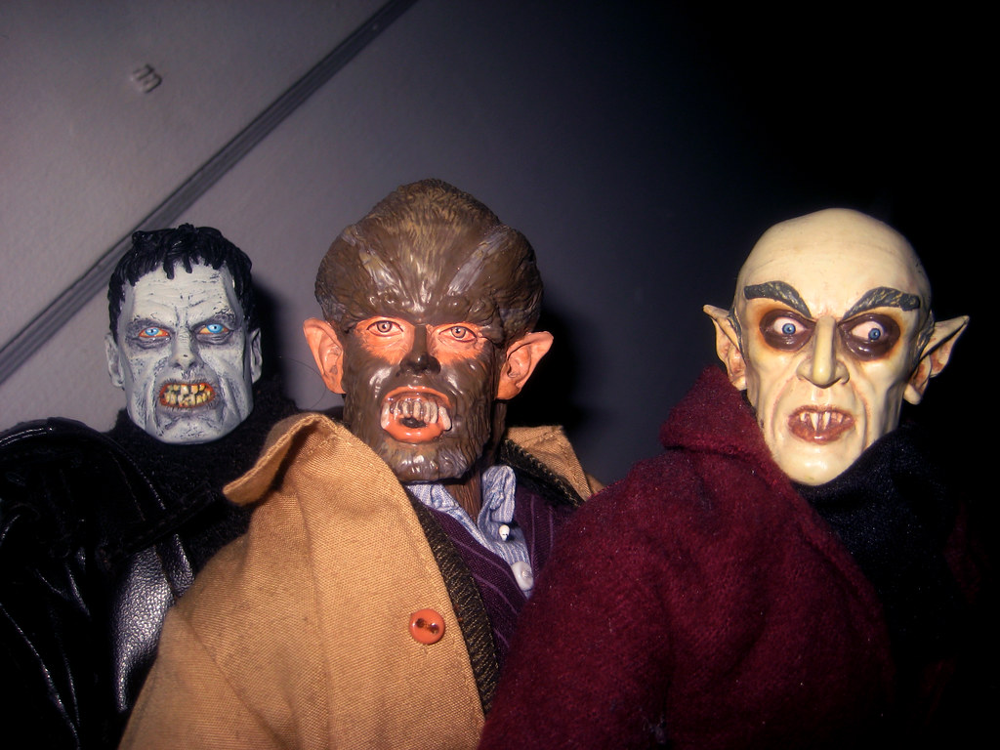
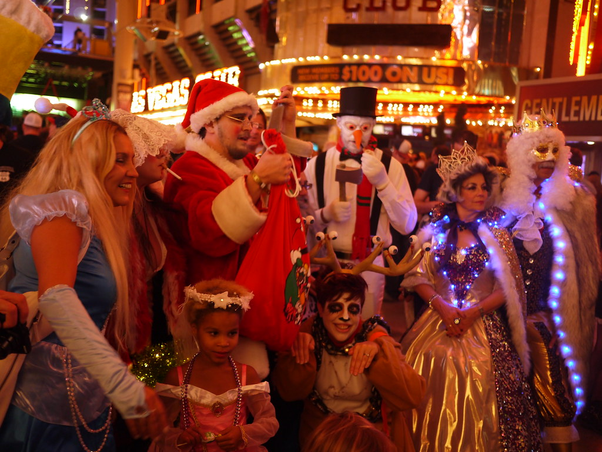

OS 7 MELHORES LUGARES DO MUNDO PARA CURTIR O HALLOWEEN
O Halloween se tornou cada vez mais popular nos últimos anos, mas quais são os lugares mais legais para você passar o Halloween? Onde estão as melhores festas, e o que torna as nossas 7 dicas de lugares para curtir o Dia das Bruxas tão especiais? Descubra aqui em nossa matéria!
ONDE SURGIU O HALLOWEEN?
O Halloween vem do inglês, um dia a ser comemorado às vésperas do dia de Todos os Santos. Como o Dia de Todos os Santos cai no dia 1º de novembro, o Halloween acontece todos os anos na noite do dia 31 de outubro. Originalmente, o Dia das Bruxas veio da Irlanda (veja mais abaixo) e, através dos muitos imigrantes irlandeses, o Halloween chegou aos Estados Unidos da América.
Através de muitos filmes, especialmente os de terror, e várias séries – por exemplo, a série Halloween de Os Simpsons, com sua anual edição especial “A casa da árvore dos horrores – o Halloween”, o evento se tornou mais popular nos últimos anos e décadas nos EUA. Outra figura especialmente popular e difundida no país, é a famosa lanterna de abóbora, conhecida internacionalmente como Jack O’Lantern.
Internacionalmente conhecido, o Halloween é comemorado no mundo todo, e é comum na noite do dia 31 de outubro, sua campainha tocar com crianças fantasiadas pedindo “gostosuras ou travessuras” a famosa brincadeira “trick or treat”, para ganharem doces dos vizinhos.
AQUI ESTÁ O NOSSO TOP 7 LUGARES PARA O SEU HALLOWEEN
1º LUGAR: NOVA YORK (EUA)
Obviamente a cidade cosmopolita de Nova York chegou ao primeiro lugar no ranking. É lá que ocorre um dos maiores desfiles de Halloween do mundo, com mais de dois milhões de participantes em fantasias assustadoras e engraçadas. O desfile será realizado pela 46ª vez em 2019 e o tema deste ano é “Wild Thing” ou Coisa Selvagem! Mais informações você encontra aqui.

Obviamente que na “cidade que nunca dorme” haverá muito mais festas e os visitantes não ficarão entediados devido às inúmeras atrações. Um ponto noturno popular é a famosa Times Square, iluminada pelos inúmeros painéis de LED.
2º LUGAR: OAXACA (MÉXICO)
No México o “Dia de los Muertos” é um dos feriados mais importantes do país, uma espécie de Halloween. Para os mexicanos, este é o dia para celebrarem a memória dos entes queridos que já se foram, assim famílias e amigos se vestem em fantasias de esqueleto, com o rosto pintado de caveira com muito estilo. Flores coloridas, cores brilhantes e caveiras são os parte do Dia dos Mortos.
 A festa é comemorada do dia 31 de outubro a 2 de novembro. A cidade de Oaxaca é conhecida em todo o país pelas populares festas nas ruas, mas também em outras partes do país você encontrará festividades neste dia. Só tenha cuidado para não chamar “O Dia de los Muertos” de Halloween, não é a mesma coisa. Oaxaca fica a aproximadamente 450 quilômetros ou 5h30 de carro do aeroporto da cidade do México.
A festa é comemorada do dia 31 de outubro a 2 de novembro. A cidade de Oaxaca é conhecida em todo o país pelas populares festas nas ruas, mas também em outras partes do país você encontrará festividades neste dia. Só tenha cuidado para não chamar “O Dia de los Muertos” de Halloween, não é a mesma coisa. Oaxaca fica a aproximadamente 450 quilômetros ou 5h30 de carro do aeroporto da cidade do México.
3º LUGAR: DUBLIN (IRLANDA)
Finalmente chegamos ao berço do Halloween! A Irlanda é considerada a matriarca do Dia das Bruxas, baseada nos costumes dos celtas, cuja tradição pagã realizavam o festival de Samhain: a festa dos ancestrais e dos mortos. Supunha-se que seres do submundo tivessem acesso ao mundo humano neste dia. Então os espíritos tomavam os corpos dos vivos, e assim criaram-se diversos artefatos e fantasias para as famílias se protegerem dos maus espíritos.  Dublin é o lugar ideal para o Halloween! Há diversas festas espalhadas pela cidade e a parade de Halloween, não tem como errar. Se você quiser explorar mais o país no Halloween, dirija para Meath, onde existem inúmeros eventos no Festival The Spirits of Meath, a apenas 1 hora de carro de Dublin. Outro local próximo a Dublin, é a cidade de Derry, também famosa pelas festas de terror, os destaques são o desfile de fantasias de Halloween e o show de fogos de artifício. Mais informações podem ser encontradas aqui. Para chegar em Derry, saindo de Dublin, são cerca de 80 min de carro.
4º LUGAR: LONDRES (INGLATERRA)
Londres, a cidade do rio Tamisa é famosa por sua reputação sombria e assustadora. “Agatha Christie” e seus romances policiais e “Jack The Ripper” o sanguinário serial killer, são só alguns dos principais personagens reais e fictícios, que retratam Londres como um lugar escuro e nebuloso onde crimes e mistérios acontecem.
 É exatamente esse sentimento misterioso que você pode ter no Halloween também, milhares de pessoas estarão nas ruas fantasiadas comemorando a noite do dia 31 de outubro. Prepare-se para uma festa animada ou curta a Noite das Bruxas em um dos inúmeros pubs pelas ruas. Infelizmente, o famoso Big Ben não soará, a torre do relógio está sendo restaurada para 2021.
É exatamente esse sentimento misterioso que você pode ter no Halloween também, milhares de pessoas estarão nas ruas fantasiadas comemorando a noite do dia 31 de outubro. Prepare-se para uma festa animada ou curta a Noite das Bruxas em um dos inúmeros pubs pelas ruas. Infelizmente, o famoso Big Ben não soará, a torre do relógio está sendo restaurada para 2021.
5º LUGAR: SALEM (EUA)
A apenas 26 quilômetros de Boston, a pequena cidade de Salem, em Massachusetts é um dos destinos mais procurados para o Halloween nos EUA! A cidade ficou famosa devido aos julgamentos de bruxas de Salem em 1692 e até hoje é apelidada de A Cidade das Bruxas!
 Os julgamentos de bruxas são um verdadeiro ímã turístico e os visitantes não encontrarão apenas um museu de bruxas na cidade, mas também vários eventos de Halloween, os chamados Salem Haunted Happenings, que duram todo o mês de outubro. Para chegar lá, por exemplo, você pode alugar um carro em Springfield e cobrir os aproximadamente 170 quilômetros em cerca de 110 minutos.
Os julgamentos de bruxas são um verdadeiro ímã turístico e os visitantes não encontrarão apenas um museu de bruxas na cidade, mas também vários eventos de Halloween, os chamados Salem Haunted Happenings, que duram todo o mês de outubro. Para chegar lá, por exemplo, você pode alugar um carro em Springfield e cobrir os aproximadamente 170 quilômetros em cerca de 110 minutos.
6º LUGAR: TRANSILVÂNIA (ROMÊNIA)
Lar da lenda do Conde Drácula, baseada na história de vida do cruel Príncipe Vlad III, a Transilvânia é uma região situada no centro da Romênia, conhecida por cidades medievais, fronteiras montanhosas e castelos, como o Castelo de Bran. Que tal em pleno Halloween passar a noite na festa do Castelo de Bran, o Conde Drácula?  Saindo de Bucareste de carro até o Castelo de Bran, são cerca de 180 km, você irá desfrutar de uma belíssima viagem passando por vilas romenas medievais e paisagens montanhosas!
7º LUGAR: LAS VEGAS (EUA)
A cidade dos cassinos é um ótimo destino para o Halloween. Na famosa Las Vegas Strip, onde estão os hotéis mais famosos, como Mandalay Bay, Luxor, Excalibur, Tropicana, New York-New York, MGM Grand, Planet Hollywood, Paris, Bellagio, Caesars Palace, Flamingo, The Mirage, The Venetian, The Palazzo, Circus Circus, Stratosphere e muito mais, você pode encontrar muitos visitantes fantasiados ao anoitecer.  Além disso, você pode preparar uma boa fantasia para a noite de Halloween em Las Vegas, porque em muitos hotéis e cassinos terão concursos de melhores fantasias em diferentes categorias. Além disso, existem inúmeros eventos (também nos dias anteriores e posteriores) para grandes fantasmas e pequenas criaturas, para que a noite em Las Vegas seja inesquecível.